© Oficina de l’energía i del Canvi Climàtic 2022
Contribución determinada a nivel nacional de Andorra
Segunda actualización de las Contribuciones determinadas a nivel nacional ante la Convención Marco de las Naciones Unidas sobre Cambio Climático (CMNUCC)
Presentado y aprobado por el gobierno de Andorra, 2 de noviembre de 2022
Autores principales:
Carles MIQUEL GARCIA
Albert GOMÀ ROCA Meritxell CUYÀS LAMANA Anna BONETA HERRERO
Órgano delegado en relación con la Convención Marco de las Naciones Unidas sobre cambio climático
Gobierno de Andorra
Ministerio de Medio Ambiente, Agricultura y Sostenibilidad Oficina de la Energía y el Cambio Climático
Punto focal de la CMNUCC
Carles MIQUEL GARCIA
Director de la Oficina de la Energía y el Cambio Climático Ministerio de Medio Ambiente, Agricultura y Sostenibilidad C \ Prat de la Creu, 62-64
500 d.C. - Andorra la Vella Principado de Andorra
Teléfono. (+376) 875.707 carles_miquel@govern.ad
Edición: Govern d´Andorra
Diseño y maquetación: Oficina de la Energía y el Cambio Climático Fotografía: Sergi Pérez
© Govern d´Andorra
NDC: 24/3/2017
1ª Actualización: 20/05/2020
2ª Actualización: 202/11/0221
Boscos de muntanya. Ordino.
Contribución determinada a nivel nacional de Andorra
glosario
AFOLU Agricultura, silvicultura y otros usos de la tierra
AR6 Sexto informe de evaluación del GIECC
BAU Business as usual
BUR Informe bienal de actualización
BTR Informe bienal de transparencia
CMNUCC Convención marco de las Naciones Unidas sobre el cambio climático Centro de estudios históricos y políticos
CNECC Comisión nacional de energía y cambio climático
COP Conferencia de las partes
CPDN/ INDC Contribuciones esperadas determinades a nivel nacional
CDN Contribuciones determinadas a nivel nacional
CTP Comunidad de trabajo de los Pirineos
CP Conferencia de las partes
ENBA Estrategia nacional de biodiversidad de Andorra
EM Emergencias médicas
FAO Organización de las Naciones Unidas para la alimentación y la agricultura
FEDA Forces Elèctriques d’Andorra
GEI Gases de efecto invernadero
Gg Giga gramo, 1.000 toneladas, 1.000.000 kg, 1.000.000.000 g GIECC Grupo intergubernamental de expertos sobre el cambio climático GWP Poder de calentamiento global (PCG)
NC Comunicación nacional
NBS Soluciones basadas en la naturaleza
ODS Objetivos de desarrollo sostenible
OIF Organización intenacional de la francofonía
ONG Organización no gubernamental
ONU Organización de las Naciones Unidas
OPCC Observatorio pirenaico del cambio climático
PAACC Proceso participativo sobre la adaptación de Andorra al cambio climático
PAN Plan de adaptación nacional
PIB Producto Interior Bruto
PNUMA Programa de las Naciones Unidas para el medio ambiente
UE Unión Europea
SSP Shared socio-economic pathway (escenario socioeconómico compartido)
1. Preámbulo
El 2 de marzo del 2011 Andorra se adhirió al Convenio Marco de Naciones Unidas sobre el Cambio Climático (CMNUCC) como parte no incluida en el anexo I (non- Annex I)2.
Durante la decimonovena sesión de la Conferencia de las Partes (COP), celebrada en Varsovia (2013), se adoptó la decisión 1/CP.19, titulada Medios para continuar con la implementación de la plataforma Durban, que establece en el párrafo 2, punto b, que en el vigésimo primer período de sesiones (en diciembre de 2015), se adoptaría un protocolo, instrumento jurídico o un texto mutuamente acordado con valor jurídico, elaborado de conformidad con el CMNUCC y aplicable a todas las partes. Para que este instrumento entrara en vigor y se aplicara a partir de 2020, invitaba a todas las partes a iniciar o ampliar los preparativos internos para elaborar sus contribuciones esperadas determinadas a nivel nacional (INDC), sin perjuicio de la naturaleza jurídica de dichas contribuciones. Todo ello con miras a la adopción de un protocolo, otro instrumento legal o un texto mutuamente acordado que tuviera valor legal, elaborado bajo el CMNUCC y aplicable a todas las partes. Esto, con vistas a lograr el objetivo del convenio establecido en el artículo 2 y comunicarlo mucho antes del 21° periodo de sesiones de la Conferencia de las Partes (primer trimestre de 2015 para las partes que estén listas para hacerlo) para mejorar la claridad, la transparencia y la comprensión de las contribuciones planificadas, sin perjuicio de la naturaleza legal de dichas contribuciones.
En 2014 todas la partes fueron invitadas a comunicar su primera NDC antes de la COP21, durante el primer trimestre de 2015, de manera clara, transparente y comprensible (párrafo 13 de la decisión 1/CP.20 de la 20a Conferencia de las Partes, Lima).
Andorra fue una de las partes pioneras en comunicar su INDC en 2015, según la cual el compromiso era reducir las emisiones de GEI en un 37% respecto al escenario Business as usual (BAU), 530,55 Gg CO2 eq., para el año 2030.
Durante la negociación de la COP21 (diciembre de 2015), las partes adoptaron la decisión 1/CP.21, que propone una nueva estrategia y se convierte en un instrumento necesario para la implementación de los procesos relacionados con la lucha contra el cambio climático, el Acuerdo de París. Este nuevo acuerdo, firmado por Andorra el 22 de abril de 2016 y ratificado por el parlamento andorrano por unanimidad el 30 de noviembre de 2016, se ha convertido en un instrumento legal universal.
Las contribuciones determinadas a nivel nacional (NDC) son el núcleo del Acuerdo de París y han de permitir la consecución de los objetivos a largo plazo, tanto para reducir las emisiones nacionales como para adaptarse a los efectos del cambio climático. El artículo 4, en los párrafos 2 y 9 de este acuerdo, prevé que cada parte prepare, comunique y mantenga sus NDC, y que esta comunicación se realice cada 5 años.
En el décimo Informe sobre la disparidad en las emisiones de ONU Medio Ambiente (2019) se evalúan los últimos estudios científicos sobre las emisiones actuales y futuras estimadas de GEI, en el que se comparan con los niveles de emisiones admisibles para que el mundo progrese en la trayectoria de menor coste hacia la consecución de los objetivos del Acuerdo de París. Durante la Cumbre Mundial sobre la Acción Climática, que tuvo lugar durante la semana de la Asamblea General de las Naciones Unidas en septiembre de 2019, se marcó como objetivo promover la adopción de medidas y, sobre todo, hacer lo posible para que los países contrajeran la obligación de incrementar sus CDN en 2020 y se propusieran alcanzar las cero emisiones netas antes de 2050. Durante dicha cumbre, Andorra mostró su compromiso con estos objetivos mediante la presentación de las diferentes acciones que nuestro país pretende establecer para reducir las emisiones de gases de efecto invernadero de aquí a 2030 y también para alcanzar la neutralidad de las emisiones de gases de efecto invernadero de aquí a 2050.
Asimismo, el 23 de enero de 2020, el Parlamento de Andorra aprobó la Declaración del estado de emergencia climática y ecológica, elaborada con participación activa de los jóvenes, la cual solicita al Gobierno que impulse la transición hacia la neutralidad en carbono de acuerdo con el Objetivo de Desarrollo Sostenible 13 (Acción por el clima).
Durante la Conferencia de las Naciones Unidas sobre el Cambio Climático del 2021 (COP26), celebrada en Glasgow, las partes reafirmaron el objetivo del Pacto de París de limitar el incremento de la temperatura media mundial a 2°C por encima del nivel preindustrial y esforzarse por no superar 1,5°C. En este sentido, y de acuerdo con el Pacto de Glasgow para el Clima, cláusula IV.22, relativa a la mitigación, las partes acordaron que las emisiones de dióxido de carbono deben reducirse un 45% en 2030 respecto al 2010 con el fin de alcanzar las emisiones netas cero para mediados de siglo. Por ello, insta a que las contribuciones determinadas a nivel nacional se actualicen en 2022 en lugar de en 2025, como estaba previsto.
Por todo ello, con la firma del Acuerdo de París, Andorra debe informar cada cinco años sobre sus contribuciones determinadas a nivel nacional (NDC) para reducir sus emisiones de gases de efecto invernadero. En 2020 presentó su primera actualización, incrementando la ambición a largo plazo con el objetivo de alcanzar la neutralidad en 2050. Además, este año 2022, de acuerdo con el Pacto por el Clima de Glasgow, Andorra presenta la segunda actualización de nuestra NDC, reforzando su ambición a medio plazo (2030).
En este sentido, y mediante el presente documento, Andorra comunica sus contribuciones determinadas en 2022 a nivel nacional de acuerdo con la decisión 1/CP.21 y la cláusula IV.24 del Pacto por el Clima de Glasgow.
2. Circunstancias nacionales
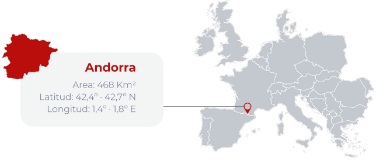
Andorra es un país pequeño (468 Km2) y montañoso ubicado en los Pirineos, entre Francia y España, con una población de 80.836 habitantes (2022).
Debido a su ubicación en medio de la cordillera montañosa de los Pirineos, es un terreno accidentado, con una altura promedia de 2.044 metros (la altura mínima del país está a 850 m en el valle del río Valira, y la altura máxima es de 2.942 m en la cima del Comapedrosa). Las aguas del país cruzan la frontera con Francia y España y alimentan dos grandes cuencas de drenaje europeas: el Ebro, en el sur, y el Garona, en el norte.
Después de un período de deforestación a finales del siglo XIX y principios del XX, los bosques recuperaron tierras de los prados y praderas abandonadas. En la actualidad, aproximadamente un 39% del territorio del país está cubierto por masa forestal, mientras que las infraestructuras y las zonas urbanas ocupan solo un 1,7% del territorio.
Andorra posee clima de montaña húmedo, de latitud media con influencia mediterránea en la zona sur, que se caracteriza por un clima mediterráneo continental. Este confiere al país una rica biodiversidad con las condiciones necesarias para adaptarse a una amplia gama de hábitats diferentes que albergan una gran cantidad de seres vivos, siendo algunos de ellos especies únicas o incluso endémicas. Las temperaturas evolucionan de acuerdo a la temperatura de las zonas del hemisferio norte, con un promedio anual de 7,39oC (referencia 1950-2019). La precipitación media es de alrededor de 840 mm/año (1950-2019). Este clima ya ha evolucionado, con una tendencia en los últimos 30 años, de aproximadamente un aumento de +0,21oC/ década en las temperaturas promedio (cambio más pronunciado en la primavera), y una reducción de al menos -22 mm/década en precipitaciones anuales (con las disminuciones más pronunciadas en otoño e invierno) (1950-2019).
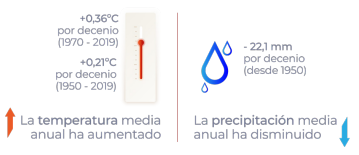
Estas variaciones climáticas tendrán consecuencias sobre los diferentes ecosistemas, pero también sobre sus habitantes y las actividades económicas que se desarrollan.
La economía andorrana se centra principalmente en actividades terciarias. Los servicios son el sector más importante de la economía del Principado (85% del PIB en el 2021), con el 85,2% de los empleados (2021). El sector financiero tiene un papel importante como motor de este sector y representa un 12,3% del PIB, según cifras de 2020. Pese a ello, cabe destacar que, debido a la pandemia sanitaria, el número de empleados se ha visto reducido en todos los sectores excepto en el de la construcción (sector que representa el 9,3% del PIB en el 2021).
El turismo es la principal fuente de recursos económicos del país (6,3% del PIB directo en el año 2020, pero se estima alrededor del 60% del PIB si se tiene en cuenta su impacto indirecto). Andorra cuenta con una amplia oferta turística, especializada en actividades invernales (2,36 millones de días de esquí vendidos en la temporada 2021- 2022, cifras similares a la prepandemia COVID-19), gracias a su relieve de montaña, pero también recibe una gran afluencia de visitantes durante otras épocas del año. Antes de la crisis sanitaria, ocho millones de personas visitaban Andorra de media anualmente, un 64,9% durante el día, y un 35,1% se alojaba al menos una noche. Pese a que en el año 2020 la cifra de visitantes aún se mostraba baja (5,4 millones), el dinamismo de las cifras de visitantes parece que ha sido recuperado este año 2022, dos años después de la crisis sanitaria.
Actualmente Andorra tiene más de 3.200 hectáreas de superficie esquiable, y este sector es el pilar de 2.000 puestos de trabajo, pero es muy vulnerable al cambio climático y al aumento de los precios de los hidrocarburos, dado que las redes de carreteras son el único vínculo con los países vecinos actualmente.
El sector agrícola, basado en un sistema tradicional de gestión agrícola y ganadería extensiva que garantiza un equilibrio sostenible entre la ganadería y el uso agrícola, solo representa un 0,6% del PIB del país (2020), pero desempeña un papel importante al proporcionar una gran cantidad de servicios ambientales, particularmente en la conservación del paisaje y el control de seguridad contra incendios.
El sector industrial es muy limitado a nivel de país (5,4% del PIB en 2020), pero tiene una evolución positiva en cuanto a contribución al PIB nacional, hecho que está relacionado con el consumo de energía eléctrica nacional.
En cuanto al sector energético, Andorra depende en gran medida de los combustibles fósiles y la energía eléctrica importada. El 76% de la energía total consumida en el país depende de los combustibles fósiles (íntegramente importados). La electricidad consumida en Andorra (alrededor de 600 GWh/año) se importa principalmente de Francia y España. La producción nacional alcanzó el 18,5% en 2017 (producida a partir de fuentes de energías renovables y la valorización energética de residuos).
3. Principios rectores de la política climática
La política de lucha contra el cambio climático, que condiciona la normativa y la estrategia climática nacional, se basa en cuatro principios rectores que son integrados en cualquier normativa, proyecto o acción climática que desarrolla la política climática del país. Con esta voluntad, en septiembre de 2018 el Parlamento andorrano aprobó por unanimidad la Ley 21/2018, de impulso de la transición energética y de lucha contra el cambio climático, que recoge estos principios en su primer capítulo.
Con posterioridad, el 17 de abril del 2019, el Consejo de Ministros de Andorra aprobó el Plan estratégico nacional para la implementación de la Agenda 2030 para el desarrollo sostenible de las Naciones Unidas, que complementa estos objetivos establecidos en la normativa climática nacional.
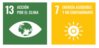
El conjunto de estos principios y objetivos globales representan también una oportunidad para el desarrollo de una nueva economía, con la creación de nuevos tipos de empleo y de nuevas tecnologías.
Estos principios son:
Sostenibilidad
Las acciones que se desarrollan satisfacen las necesidades de la generación actual, sin comprometer la capacidad para satisfacer las necesidades de las generaciones futuras, aplicándolas en el sentido más amplio y en todo tipo de aspectos en los ámbitos sociales, ambientales y económicos. En las acciones del sector energético, se priorizan concretamente las energías de fuentes renovables, la reducción de la demanda energética, la eficiencia energética y la reducción de las emisiones globales de GEI que provienen de este sector.
Protección e información
Facilitar información comprensible para los ciudadanos que permita tomar decisiones y hábitos de consumo conscientes. La participación de los ciudadanos y agentes implicados en la elaboración de las estrategias climáticas también es un aspecto clave. Para asegurar esta participación efectiva, la ciudadanía recibe la información necesaria de manera transparente. Para ello, la Ley 21/2018, de impulso de la transición energética y de lucha contra el cambio climático, crea la Comisión Nacional de Energía y Cambio climático, configurada por diferentes actores del sector, privados y públicos, jóvenes, tercer sector, etc., que participa activamente en la Estrategia energética nacional y de lucha contra el cambio climático. La protección de los ciudadanos pasa por generar equidad territorial, un reparto justo de los costes y una calidad y garantía de los servicios, especialmente los energéticos.
Crecimiento económico
El fomento de actividades económicas con un alto valor añadido se lleva a cabo a través de la aplicación de las mejores técnicas disponibles para crear nuevas posibilidades de mercado o negocio. La utilización de la mejor tecnología disponible evita, o al menos reduce al máximo, las emisiones y el impacto en el conjunto del medio ambiente.
Soberanía y diversificación
Para fomentar la resiliencia del país frente a los cambios que se produzcan, se incrementa la soberanía y se diversifican los diferentes sectores económicos. Concretamente, en el sector energético se incrementa la producción energética nacional, para reducir los riesgos frente a los cambios en el mercado.
La Estrategia energética nacional y de lucha contra el cambio climático, aprobada el 3 de febrero del 2021, consta de 5 programas de acción y de 17 actividades. Es la herramienta u hoja de ruta para alcanzar la neutralidad; desarrollar un plan de adaptación al cambio climático para hacer frente a la situación actual y prevista en el futuro; estructurar un sistema de financiación para llevar a cabo las acciones previstas; sensibilizar, educar y formar a la población; desarrollar tareas de investigación e innovación indispensables para entender y responder a los nuevos retos ambientales y tecnológicos.
Las acciones que recoge la estrategia se dirigen a sectores concretos como el de la energía, la movilidad, la agricultura y la gestión de residuos, entre otros, así como a diferentes sectores para tratar temas más transversales como la promoción de la economía circular, los cambios en nuestros hábitos de consumo, la aplicación de soluciones basadas en la naturaleza, el fomento de la investigación en estos ámbitos y la inclusión de nuevos conceptos en la educación del conjunto de la ciudadanía.
El conjunto de estas acciones sigue siempre los principios rectores comentados anteriormente y cuenta con la participación de la Comisión Nacional de Energía y Cambio climático. Este documento se revisa como mínimo cada 6 años, de manera que recogerá los compromisos de los nuevos NDC presentados en el futuro, siendo ambos documentos retroalimentados y revisados periódicamente según los acuerdos internacionales y la normativa nacional.
El contexto energético internacional de estos últimos tiempos hace imprescindible impulsar, con carácter de urgencia, medidas que permitan afrontar con la mayor garantía posible tensiones en los mercados y situaciones de dificultad en el abastecimiento de la energía, siempre considerando la acción climática en estas decisiones, aumentando así nuestra resiliencia.
Por ello, la política climática se ha concentrado en el último año en dotar al Gobierno y a los demás actores implicados de las herramientas necesarias para la aplicación de medidas de ahorro que ayuden a sentar unas bases sólidas para un modelo energético sobrio.
En este contexto global, el rol ejemplar de la administración toma una especial importancia, así como la búsqueda de nuevas herramientas de financiación y fiscales que ayuden a dar un impulso a las acciones iniciadas.
4. Contribución en mitigación
DESCRIPCIÓN DEL COMPROMISO Y ESCENARIOS
Los compromisos en materia de reducción de emisiones no absorbidas, presentados en 2015 a través de la INDC, eran el resultado del primer Informe Bianual de Actualización (BUR) de Andorra en el Convenio Marco de las Naciones Unidas sobre el cambio climático (diciembre 2014). Según los compromisos presentados, en 2030 las contribuciones previstas determinadas a nivel nacional (CPDN) de Andorra estarían en línea con la evolución del escenario RCP2.6, compatible con mantener el aumento mundial de las temperaturas por debajo del umbral de los 2oC durante el siglo XXI, sobre la base de los valores 1850-1900, y sería coherente con unas medidas rigurosas de mitigación, así como con el mantenimiento de las concentraciones globales de CO2 eq. en el rango de 430 a 480 ppm.
Estos compromisos se concretaron en la reducción de las emisiones equivalentes no absorbidas de aquí a 2030, en un 37% (193,73 Gg CO2 eq.) en relación a las emisiones no absorbidas del escenario BAU, propuesto en el Primer BUR de Andorra en el CMNUCC (diciembre 2014).
Este compromiso se incrementó con la primera actualización de la NDC en 2020, concretamente con un objetivo a largo plazo de neutralidad en carbono para el año 2050.
La actualización que ahora se presenta responde al Pacto por el Clima de Glasgow anteriormente comentado y refuerza el compromiso a medio plazo para asegurar conseguir la neutralidad en el año 2050.
Tipo de compromiso: visión a medio y a largo plazo
Se refuerza a medio plazo para el 2030 la reducción cuantificada en un valor absoluto relativo a las emisiones no absorbidas respecto el escenario Business as usual definido en el primer Informe Bianual de Actualización de Andorra en el CMNUCC (2014), pasando del objetivo previamente asumido de una reducción del 37% a una reducción del 55% para el 2030 respecto a un escenario inmovilista (BAU).
Se mantiene y refuerza así el compromiso ya adquirido en la primera actualización de la NDC a largo plazo para el 2050, buscando la neutralidad en carbono, es decir el equilibrio entre las emisiones y las absorciones para el año 2050.
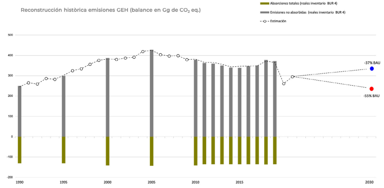
Gráfico 1. Reconstrucción histórica de emisiones GEI (balance en Gg de CO2 eq.)
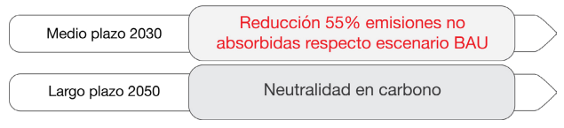
Así, el período de implantación para los objetivos de mitigación se divide en dos períodos, el primero a corto y medio plazo que comprende desde el año 2020 hasta el año 2030, y el segundo, a largo plazo, que comprende desde el año 2031 hasta el año 2050.
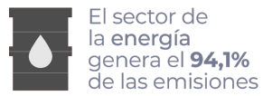
Los niveles de reducción del escenario a medio plazo se concretan en un 55% (292 Gg CO2 eq.) de las emisiones anuales no absorbidas, respecto al escenario Business as usual, de aquí al 2030. Este porcentaje ha sido revisado de acuerdo a la tendencia del consumo energético en el país desde 2005 hasta 2021, sector responsable de más del 94% de las emisiones de GEI de Andorra.
Para el año 2050, el nivel de reducción será suficiente para que las emisiones de GEI queden equilibradas con las absorciones de estos gases, ya sea a través de la capacidad de sumidero nacional como otras medidas de captura, almacenaje o compensación a través de mecanismos nacionales o internacionales basados en el mercado, alcanzando un valor aproximado de 140 Gg CO2 eq. Recientemente, se ha llevado a cabo un inventario nacional forestal3 que ha permitido mejorar la caracterización de la capacidad de sumidero del territorio, y los primeros resultados apuntan a una cuantificación superior a la estimada hasta ahora, de aproximadamente 204 Gg CO2 eq. Cuando se validen los resultados definitivos del estudio comentado se introducirá esta mejora en nuestro inventario nacional de GEI.
Las acciones previstas para los 3 sectores clave en cuanto a GEI son las que se presentan a continuación. Complementariamente a estas acciones, se implementarán mecanismos de compensación para alcanzar la meta en caso que sea necesario:
1. Sector energía, y más concretamente acciones sobre el sector eléctrico, la movilidad y la edificación
A medio plazo (2030)
Se prevé reducir la intensidad energética en un mínimo de un 20%, con un incremento de la producción eléctrica nacional (que será de más del 70% proveniente de fuentes renovables) del 33% de la demanda eléctrica. Tal y como se ha expuesto en el apartado de política climática, debido a la situación energética global, se ha reforzado el modelo energético sobrio y se está trabajando para favorecer las modalidades de autoconsumo a partir de fuentes de energía renovables, con el objetivo de facilitar esta transición energética que nos permitirá reducir las emisiones de este sector. En el marco del rol ejemplar de la administración, se ha fijado la referencia de la reducción del consumo energético en un 15% a partir de setiembre del 2022.
También se han definido criterios para racionalizar el gasto de la energía en la contratación pública, como por ejemplo, que en los nuevos proyectos de construcción, reforma de edificios o de instalaciones, y en la adquisición de aparatos relacionados con la energía, ya sea en la elaboración del proyecto o en la adjudicación, se tengan en cuenta parámetros que permitan un mayor ahorro de energía. Al mismo tiempo, se implanta una estructura de seguimiento centrada en la figura del gestor energético, responsable de seguir, coordinar y asegurar el cumplimiento de las previsiones de la normativa aprobada. Para poder evaluar la eficacia de las medidas tomadas, analizar los resultados obtenidos y definir otras medidas, deben poder medirse una serie de indicadores. Por este motivo, se ha creado un sistema de información para facilitar la
toma de decisiones. Por último, se prevé la elaboración de un plan de actuación con el fin de sentar las bases que permitan la implantación de un modelo energéticamente en la Administración General y entidades relacionadas.
Más concretamente en el subsector de actividades de combustión de combustibles, para el transporte por carretera la reducción fijada es del 50% de las emisiones de GEI producidas por el transporte interno. Para ello, entre algunas de las acciones previstas, se establece, a través de la Ley 21/2018, del 13 de setiembre, de impulso de la transición energética y del cambio climático, la reducción de las emisiones de GEI por el incremento del porcentaje de vehículos a propulsión eléctrica del parque automovilístico nacional de turismos hasta el 20% para el año 2030. Para promover este cambio y dar impulso al rol ejemplar de la administración, se ha definido normativamente la obligación de que cualquier administración pública o entidad dependiente, cuando adquiera un nuevo vehículo o deba reponer los existentes, se realice con vehículos cero emisiones (Z) y ECO (E). Solo en casos muy concretos, en los que las necesidades lo justifiquen, y previa valoración de los ministerios responsables en materia de adquisición de vehículos del parque móvil y de la Oficina de la Energía y del Cambio Climático, pueden adquirirse otras tipologías de vehículos. Estos criterios también son aplicables en las modalidades de leasing o renting, y en cualquier caso, antes de una nueva adquisición, los ministerios anteriormente comentados deben racionalizar y redistribuir los vehículos ya existentes con el fin de optimizar su uso en función de su eficiencia energética.
En cuanto al sector de la edificación, cualquier nueva construcción a partir del año 2020 debe ser diseñada y ejecutada para conseguir un edificio de consumo energético casi nulo, tal y como también queda regulado por la ley anteriormente referida.
A largo plazo (2050)
Se reducirá la intensidad energética en un mínimo de un 30%, con un incremento de la producción eléctrica nacional (que será de más del 85% proveniente de fuentes renovables) del 50% de la demanda eléctrica. Más concretamente en el subsector de actividades de combustión de combustibles, para el transporte por carretera la reducción no se fija a largo plazo, pero se continuará con el incremento del porcentaje de vehículos a propulsión eléctrica del parque automovilístico nacional de turismos hasta el 50%. En cuanto al sector de la edificación, cualquier nueva construcción debe ser diseñada y ejecutada para conseguir un edificio de consumo energético casi nulo o positivo. Tal y como se ha expuesto en el apartado de política climática, debido a la situación energética global se ha reforzado el modelo energético sobrio y se está trabajando para favorecer las modalidades de autoconsumo a partir de fuentes de energía renovables, con el objetivo de facilitar esta transición energética que nos permitirá reducir las emisiones de este sector.
2. Sector de agricultura, silvicultura y usos del suelo
Alrededor del 23% de las emisiones son absorbidas por la masa forestal del territorio, de manera que una mejora en la gestión silvícola que incorpore soluciones basadas en la naturaleza ha de permitir que no solo se mantenga el escenario previsto a medio plazo, es decir que como mínimo se mantenga la capacidad de sumidero de la masa forestal del país del año 2017 (cuantificada en -139 Gg CO2 eq. anual), sino que se incremente la ambición respecto a la capacidad de sumidero de los bosques del país. Para ello, se ha mejorado la cuantificación de la capacidad de sumidero de nuestros bosques (inventario nacional forestal e interpretación de los usos del suelo a través de imágenes satélite) y se fomenta una gestión forestal sostenible que permita incrementar la capacidad de absorción a través de la silvicultura adaptativa. El resultado de la mejora en la cuantificación de la capacidad de sumidero será objeto de análisis en el primer BTR que comunique Andorra.
Las emisiones per cápita (teniendo en cuenta la población equivalente) de GEI del subsector de residuos sólidos se ajustarán a los objetivos de la Ley de Economía circular, aprobada este año 2022, la cual prevé la reducción de las emisiones de GEI a medio y largo plazo a través de la mejora de las herramientas de modelización, así como la obligación de que las empresas de telecomunicaciones deben reducir sus emisiones de gases de efecto invernadero y deben hacer públicos anualmente los datos y las acciones impulsadas en este sentido. Para que los consumidores sean conscientes del impacto de su consumo digital, estas empresas deben proporcionar a los clientes información sobre la cantidad de datos consumidos y el equivalente en emisiones de GEI correspondientes.
Estos objetivos se concretan en la Estrategia de Economía circular, que se prevé aprobar antes de finalizar este año 2022. Entre algunas de las acciones destacan las relacionadas con el eje 1 de consumo sostenible, y más concretamente con el programa de acción 2, relativas a la prevención del despilfarro alimentario, ya que cuando se estropean los alimentos también se desperdician el agua y el suelo, así como los productos químicos y los combustibles y la energía necesarios para cultivarlos y transportarlos. Esto tiene un gran impacto sobre las emisiones de gases de efecto invernadero. Otro de los ejes de la estrategia es el número 2, relativo a los sistemas de producción y los sectores económicos. Este eje incluye el programa de acción 6, relativo al sector de la construcción. Se estima que en la UE las emisiones de GEI debidas a la extracción de los materiales y los procesos de construcción representan entre el 5-12% de las emisiones globales, por ello la estrategia prevé disponer del 70% de los residuos de la construcción valorizables4. En último lugar, cabe destacar en este mismo eje el programa de acción 10 de circularidad en los bosques, el cual prevé tener un plan de ruta de gestión de los bosques teniendo en cuenta su función de sumidero de carbono.
El conjunto de medidas o acciones previstas se resumen en la tabla anexada a esta NDC.
Compromiso justo y ambicioso
El compromiso de las partes es coherente con sus responsabilidades y de acuerdo a sus capacidades, así como el apoyo recibido de la comunidad internacional. En este sentido:
Andorra es parte de la Convención Marco de las Naciones Unidas sobre el Cambio Climático como parte no incluida en el Anexo I. A nivel internacional, para el año 2019, Andorra es responsable de aproximadamente el 0,0009054%4 de las emisiones globales.
Las emisiones de GEI de Andorra han mostrado una clara tendencia a la baja desde su pico histórico en 2005 (-13% entre 2005 y 2019), al contrario de lo que se observa en todo el mundo con un aumento de más del 22% para el mismo período (40,57 MtCO2 a 49,76 MT CO2 5).
Las políticas de mitigación asociadas con los sectores mencionados son acciones a largo plazo, con rentabilidad y resultados a medio plazo que se han reforzado con las políticas de sobriedad energética recientes.
Para 2030, la actualización de la NDC de Andorra está en coherencia con un escenario intermedio de concentraciones SSP1 2.6 y SSP1 1.9, escenario con medidas estrictas de mitigación y una condición necesaria para mantener una temperatura por debajo de 2oC en el siglo XXI (en comparación con el período 1850-1900).
A nivel global, para asegurar que el incremento de temperaturas se sitúe por debajo de la barrera de los 2oC a final del siglo XXI (en comparación con el período de referencia 1850-1900), se deben reducir las emisiones informadas en 2010 entre un 41 y un 72% para el año 2050.
Según el último informe sobre la disparidad en las emisiones de 2019 del Programa de las Naciones Unidas para el Medio Ambiente, esta reducción debe ser a partir del 2020 del 2,7 % anual (7,6 % si en cambio se quiere conseguir el objetivo de no incrementar más de 1,5oC al final del siglo XXI). Este compromiso de reducción del 2,7% anual está en consonancia con nuestro compromiso de neutralidad en carbono a largo plazo para el año 20506.
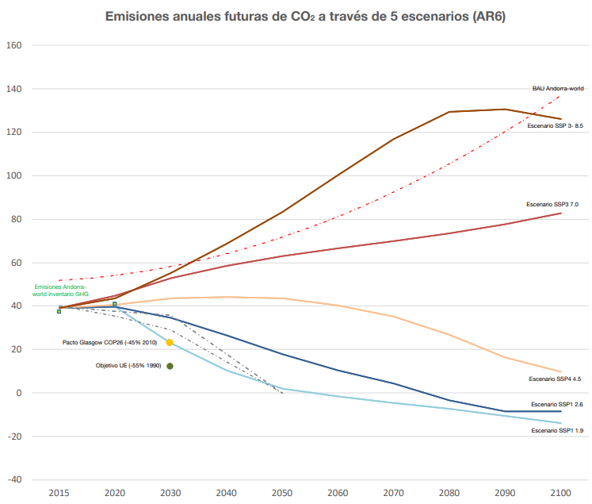
Gráfico 2. Emisiones anuales futuras de CO2 a través de 5 escenarios (AR6)
INFORMACIÓN PARA FACILITAR LA CLARIDAD, TRANSPARENCIA Y COMPRENSIÓN
Valores de referencia
Para poder hacer un correcto seguimiento del compromiso definido en la primera NDC y del refuerzo de este compromiso con esta nueva actualización, se mantiene como referencia el valor de las emisiones no absorbidas del escenario Business as usual (530,55 Gg CO2 eq., para el 2030), definidas en el primer Informe Bianual de Actualización de Andorra para el CMNUCC.
Alcance de las acciones de mitigación de GEI
Debido a que más del 94% de las emisiones totales de GEI (desde el año 1990 hasta 2019) provienen del sector de la energía (véase la evolución de las emisiones y absorciones nacionales de GEI según el cuarto BUR presentado en el marco del CMNUCC, gráfico 1), de acuerdo con las categorías definidas en las directrices del GIECC 2006 para realizar el inventario nacional de GEI, el alcance de las acciones previstas para conseguir el objetivo de mitigación de GEI fijado en esta NDC para Andorra se centra principalmente en el sector de la energía, pero también se apoya en otras acciones en sectores menos emisores, como el de residuos.
Pese a que el alcance del inventario nacional de emisiones de GEI, según las directrices del GIECC 2006, integra la energía eléctrica importada solo a nivel informativo, este representa más del 23% del consumo energético del país y un 12% aproximado de las emisiones totales, según nuestro cálculo de la huella de carbono, de manera que se ha considerado pertinente incluir las acciones de mitigación necesarias para minimizar el consumo eléctrico y las emisiones de GEI de este subsector.
Asimismo, las acciones de mitigación también contemplan acciones sobre el sector que otorga la capacidad de sumidero del país para absorber los GEI, que es el sector de agricultura, silvicultura y otros usos del suelo.
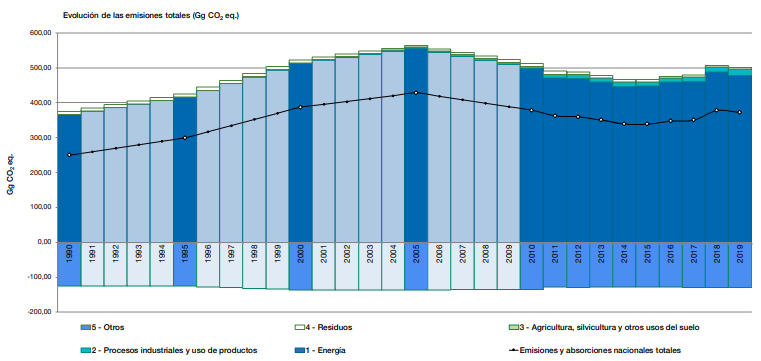
Gráfico 3. Evolución de las emisiones totales de GEI (Gg CO2 eq) presentado en el cuarto BUR de Andorra (2020)
Cobertura de GEI
Los gases siguientes de efecto invernadero son incluidos en la NDC, de acuerdo con los gases inventariados y reportados en nuestros BUR según las Directrices del GIECC 2006 y posteriores revisiones para la realización de inventarios nacionales de GEI: Dióxido de carbono (CO2), metano (CH4), óxido nitroso (N2O), los hidrofluorocarbonos (HFC) y hexafluoruro de azufre (SF6).
Los GEI emitidos por el sector energía, procesos industriales y usos de productos representan más del 98% del total de GEI inventariados según el último inventario de GEI (2019). Para la contabilidad, se consideraron los potenciales de calentamiento global del Quinto Reporte del GIECC (2014). Cabe destacar que en el último inventario nacional de GEI se ha mejorado significativamente la serie de datos relativos a los gases refrigerantes gracias a una mejora del sistema de recogida de datos a través de un aplicativo informático. Por ello, los procesos industriales y los usos de productos han ganado peso como sector emisor en comparativa con inventarios anteriores.
Contribución de mecanismos internacionales basados en el mercado
La Ley 21/2018, del 13 de setiembre, de impulso de la transición energética y del cambio climático crea el mercado nacional voluntario para la compensación de GEI, y pese a que su integración en el mercado internacional no está planificada de manera inmediata, el reglamento que lo regula prevé que cumpla con los estándares internacionales para poder contar con una herramienta adicional que incorpore actuaciones de mitigación en los sectores difusos y, en caso que sea necesario, constituya una herramienta complementaria para promover acciones de mitigación en el sector privado e indirectamente contribuyan a alcanzar los compromisos nacionales de reducción de emisiones previstos en la NDC.
Proceso de planificación
Para la revisión y actualización de la NDC del Gobierno de Andorra, desde la Oficina de la Energía y del Cambio Climático, integrada en el Ministerio de Medio Ambiente, Agricultura y Sostenibilidad, se ha valorado el conjunto de la normativa y los compromisos nacionales e internacionales que en los últimos años se han aprobado.
Es especialmente destacable la Ley 21/2018, del 13 de setiembre, de impulso de la transición energética y del cambio climático7, una ley aprobada por unanimidad en el Parlamento que se elaboró a partir de una propuesta de Ley del Gobierno, en la que los diferentes ministerios que lo componen participaron y aportaron sus puntos estratégicos y consideraciones, de acuerdo con los compromisos internacionales que previamente se habían firmado, como el CMNUCC (adhesión el 2 de marzo del 2011) y el Acuerdo de París (2016).
Para la elaboración de la propuesta de ley que posteriormente fue aprobada se tuvo en cuenta, a parte de otros documentos técnicos de referencia:
El Libro blanco de la Energía de Andorra del 2012.
El Plan sectorial de infraestructuras energéticas de Andorra del 2016.
El Plan Nacional de Residuos revisado para el período 2017- 2020.
La Estrategia nacional de biodiversidad de Andorra (ENBA) para el período 2016-2024.
La normativa existente en materia de eficiencia energética, energías renovables y organización y gestión del sistema energético nacional.
La primera NDC aprobada por Andorra.
Las comunicaciones en cumplimiento del CMNUCC de Andorra desde el año 2014.
Actualmente, la Ley 21/2018, del 13 de setiembre, de impulso de la transición energética y del cambio climático está en proceso de modificaciones puntuales, con el objetivo de favorecer las modalidades de autoconsumo a partir de fuentes de energía renovables, con el fin de facilitar esta transición energética que nos permitirá reducir las emisiones de este sector. En los últimos meses se han aprobado una serie de normas para promover un modelo energético más sobrio y se está trabajando especialmente para racionalizar el gasto de la energía en el sector público.
Así pues, la primera actualización de la NDC tuvo en cuenta las metas definidas a medio y largo plazo por la Ley 21/2018, anteriormente referida, así como los posteriores compromisos estratégicos del Gobierno, que se incorporaron en la Estrategia energética nacional y de lucha contra el cambio climático, a largo plazo para el año 2050. Cabe esperar, tal y como prevé la estrategia comentada, que la próxima revisión de este documento estratégico, prevista para el año 2027, deba incluir las actualizaciones de la NDC de este año 2022 y del año 2025.
La Estrategia energética nacional y de lucha contra el cambio climático daba respuesta al compromiso de determinar una ruta para alcanzar la meta de neutralidad de GEI en 2050, que se fijó en la PreCOP 25 (octubre de 2019) y que se comunicó formalmente durante el discurso en el plenario de la COP25 (10 de diciembre de 2019) por parte de la Ministra de Medio ambiente, Agricultura y Sostenibilidad del Gobierno de Andorra.
Para las actualizaciones de la NDC posteriores al año 2025, la participación de los diferentes actores del sector privado y público a través de la Comisión Nacional de la Energía y del cambio climático y de los grupos de trabajo que dependen de ella, es una pieza clave en la planificación, ya que este órgano participativo será activo durante el proceso de revisión de la Estrategia energética nacional y de lucha contra el cambio climático, la cual alimentará a su vez la siguiente NDC (véase Mecanismos legales y estratégicos para la implementación de la NDC).
Valores considerados del potencial de calentamiento global de los gases
Con el fin de hacer que el compromiso de Andorra sea comprensible y comparable, los valores se han comparado con los valores equivalentes de dióxido de carbono a través de su Poder de Calentamiento Global (GWP). Los valores de referencia de GWP considerados son los del quinto informe de evaluación del GIECC (SAR, GWP, horizonte temporal de 100 años).
Aunque no es aplicable a las partes no incluidas en el Anexo I de la Convención, se han adoptado en la medida de lo posible los valores propuestos por la decisión 24/CP.19 (revisión de las directrices del GIECC para la notificación de inventarios anuales de las partes incluidas en el Anexo I de la Convención).
Metodología de trabajo
Con el objetivo de planificar las acciones necesarias para alcanzar la meta de la reducción de emisiones de GEI a medio (2030) y a largo plazo (2050), se parte de la información de base del inventario de GEI nacional y de la definición de los escenarios siguientes:
Hipótesis adoptada para la elaboración de los inventarios de GEI presentados en los informes bianuales de actualización de la información para el CMNUCC. Estos inventarios se realizan de acuerdo con las directrices para la elaboración de los inventarios de GEI del Grupo Intergubernamental de expertos en materia de cambio climático (2006 y 2019 Refinements).
La definición del escenario Business as usual se realiza según las siguientes hipótesis para los 3 sectores clave en cuanto a GEI en Andorra:
Sector energía: se mantienen les emisiones de GEI per cápita (teniendo en cuenta la población equivalente, es decir la población residente y flotante media) a partir del año 2005 (año de máximas emisiones de GEI) hasta 2050.
Sector AFOLU: Las emisiones de GEI relativas al subsector de agricultura y ganadería se mantienen desde el año 2000 (no se prevé un incremento en la superficie agrícola y la capacidad de reses también está en el máximo de su valor según la superficie y la tipología de ganadería del país, que es extensiva), mientras que la capacidad de sumidero de GEI para la masa forestal del sector Usos del Suelo se considera constante e igual a la media de la capacidad de absorción de GEI estimada para el período 1990-2011.
Sector residuos: Las emisiones per cápita (teniendo en cuenta la población equivalente) de GEI del subsector de residuos sólidos se mantienen a partir de 1995 (año en el que las primeras acciones de reducción de emisiones de este subsector empiezan a tener sus efectos, por la introducción progresiva de la recogida selectiva y la mejora de las instalaciones de tratamiento) hasta 2050. En cuanto a las emisiones per cápita (también en base a la población equivalente) del subsector de aguas residuales, se considera que estas, en cambio, se mantienen constantes a partir del año 2005, año en el que las acciones para la mejora del tratamiento de estas aguas empiezan a tener efectos sobre las emisiones de GEI.
El resto de hipótesis utilizadas para la elaboración de los escenarios parten de los datos básicos de evolución de la población residente, población equivalente y evolución del PIB. Una descripción más detallada del escenario BAU se recoge en los BUR presentados a la Secretaría del CMNUCC hasta 2020.
Los escenarios a medio y largo plazo se estiman a partir del escenario BAU, incorporando el conjunto de objetivos y medidas previstas y descritas en el apartado Tipo de compromiso: visión a medio y largo plazo. Las estimaciones para el cálculo del escenario a medio plazo que se incorporaron ya en el primer BUR presentado por Andorra (2014), y que la Ley 21/2018, del 13 de setiembre, de impulso de la transición energética y del cambio climático recoge, se mantienen, pero para el escenario de medidas complementarias desde el 2021 hasta el 2030, se proyectan de nuevo las emisiones en base a la tendencia del consumo energético de los últimos 18 años (hay que tener en cuenta que el año de máximas emisiones para Andorra fue el 2005 y el sector energía representa más del 94% de las emisiones totales nacionales). En cuanto al escenario de emisiones a largo plazo, el documento que recoge estas proyecciones es el que sirve de hoja de ruta para las acciones que se implementan, la Estrategia energética nacional y de lucha contra el cambio climático.
Enfoque de contabilización para la agricultura, la silvicultura y otros usos del suelo
Las perturbaciones naturales o los eventos extraordinarios relacionados con los sumideros de carbono no se considerarán para evaluar el cumplimiento de los compromisos de la NDC. Hasta el momento, estas perturbaciones no han representado cambios significativos en estos sectores, tal y como se ha ido comunicando en nuestros BUR.
5. Contribución en adaptación
A nivel internacional, el CMNUCC reconoce la vulnerabilidad de todos los países ante los efectos del cambio climático. Aunque durante los primeros años del Convenio los procesos de adaptación recibieron menos atención que los esfuerzos destinados a la mitigación de los GEI, desde la públicación del tercer Informe de Evaluación del GIECC (2001), la necesidad de trabajar sobre los temas de adaptación ganó importancia y todas las partes del Convenio acordaron que era de vital importancia. En 2010, durante la COP16, se estableció el proceso de los planes de adaptación nacionales (PAN) para que las partes pudieran identificar las necesidades de adaptación a medio y largo plazo con el objetivo de desarrollar estrategias y programas para hacer frente a estas necesidades (Convenio de Adaptación de Cancún).
Bajo este marco internacional, en 2014 se llevó a cabo un Proceso Participativo sobre la Adaptación de Andorra al Cambio Climático (PAACC), con el objetivo de identificar los
posibles impactos del cambio climático sobre los sectores socioeconómicos y ambientales en el país y valorar así cuáles eran las vulnerabilidades de cada uno de ellos, así como identificar las medidas de adaptación para reducir la vulnerabilidad y hacer frente a estos impactos.
Para llevar a cabo el PAACC se identificaron los impactos del cambio climático sobre el territorio del Principado a partir de trabajos científicos previos efectuados en Andorra y el conjunto del Pirineo en el marco del proyecto de cooperación del Observatorio Pirenaico del cambio climático (OPCC)8. En total se identificaron 43 medidas de adaptación, que se clasifican según la tipología de acción y el ámbito temático de la siguiente manera:
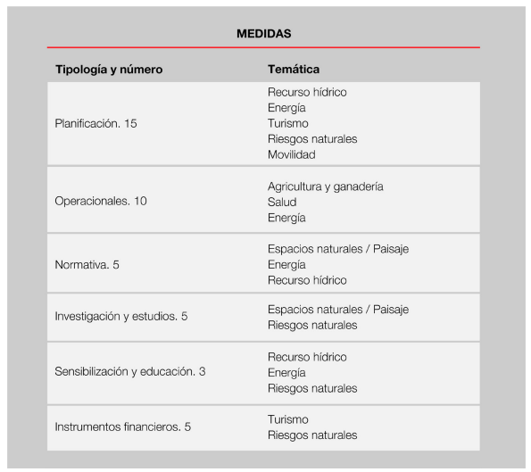
Tabla 1. Medidas de adaptación identificadas y priorizadas en el PAACC (2014)
Para asegurar que las medidas de adaptación son coherentes y se adaptan a los cambios reales y previstos sobre el territorio, se continúa con el estudio del impacto y vulnerabilidad en relación al cambio climático. La Ley 21/2018, del 13 de setiembre, de impulso de la transición energética y del cambio climático, considera que las temáticas prioritarias son la salud, la agricultura, la energía y el turismo.
Las medidas de adaptación identificadas el año 2014 se revisan y se incorporan nuevas medidas, si es necesario, en coherencia con la hoja de ruta establecida por la Estrategia energética nacional y de lucha contra el cambio climático. Estas medidas tienen en cuenta los servicios ecosistémicos de la naturaleza e incorporan soluciones basadas en esta para incrementar la resiliencia del territorio, especialmente para la mejora de la capacidad de sumidero y la gestión y minimización de los riesgos relacionados con los efectos del cambio climático en un territorio de montaña como el de Andorra.
Para poder llevar a cabo estudios científicos de rigor, se considera necesaria la cooperación trasfronteriza, por ello Andorra continúa impulsando el OPCC, que en noviembre del 2021, en el marco del proyecto ADAPYR9, ha aprobado la Estrategia Pirenaica de adaptación al cambio climático. Actualmente, se está configurando el plan operativo para complementar esta estrategia, buscando para ello fuentes de financiación y la creación de grupos de trabajo consolidados con un objetivo común: hacer del Pirineo un territorio resiliente.
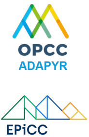
Con el apoyo de este trabajo transfronterizo se complementarán las medidas de adaptación identificadas en el PAACC en 2014, de acuerdo con las prioridades establecidas en la Ley 21/2018, del 13 de setiembre, de impulso de la transición energética y del cambio climático.
Cabe destacar que, tal y como se ha descrito en las circunstancias nacionales, Andorra cuenta con un importante patrimonio natural. Por ello, y como respuesta al Convenio sobre la diversidad biológica (Río de Janeiro, 5 de junio de 1992), en el año 2016 se aprobó la Estrategia nacional de biodiversidad de Andorra (ENBA) para el período 2016-2024, la cual integra los efectos del cambio climático (bioinvasiones, pérdida de especies, sobreexplotación de recursos, etc.). Cabe esperar que la implementación de esta estrategia permita, a medio plazo, la adopción de las medidas de adaptación necesarias en coherencia con los resultados del proyecto ADAPYR y otros estudios que se desarrollen en este ámbito. En este sentido, se está trabajando, juntamente con los órganos gestores de los parques naturales del territorio y el centro de investigación nacional, Andorra recerca i innovació, para establecer una serie de indicadores para evaluar el impacto del cambio climático en las zonas húmedas del territorio.
Asimismo, la mejora del conocimiento de nuestro entorno natural y su funcionamiento nos lleva a la consolidación de un modelo de gestión del territorio natural y rural que nos permite mejorar la resiliencia del país a partir de medidas basadas en la naturaleza. En este sentido, y en el marco de la cooperación transfronteriza, cabe destacar el estudio y capitalización de la experiencia del caso piloto en Andorra del proyecto del programa SUDOE MONTCLIMA10: Actions to prevent the risk of forest fires and improve the protective function of the forest against erosion and falling blocks and rocks in Andorra o NBS for post-disaster highland erosion control.
6.
Mecanismos de implementación para alcanzar los compromisos del NDC
MECANISMOS LEGALES Y ESTRATÉGICOS
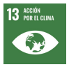
Una de las herramientas que la Ley 21/2018, del 13 de septiembre, de impulso de la transición energética y del cambio climático prevé es la Estrategia energética nacional y de lucha contra el cambio climático, aprobada en febrero del 2021. Esta estrategia incluye diferentes programas de mitigación, adaptación, capacitación, innovación y tecnología, educación y sensibilización, etc., y define un objetivo más ambicioso que la Ley en cuanto a compromiso de reducción, ya que incluye la meta de neutralidad climática para el año 2050, tal y como Andorra ya avanzó en la preparación de la COP 25 y como se contempla en la 1a actualización de la NDC del año 2020. Esta 2a actualización de la NDC prevé incrementar la ambición a medio plazo, estableciendo un objetivo de reducción del 55% respecto a nuestro escenario BAU. Este nuevo objetivo deberá ser integrado en las herramientas estratégicas de escala nacional.
En este sentido, la estrategia y sus revisiones serán las herramientas de planificación que servirán de base para las actualizaciones posteriores de las contribuciones determinadas a nivel nacional (NDC), tal y como a continuación se presenta de manera esquemática:
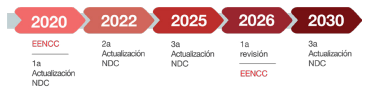
Donde EECN es la Estrategia energética nacional y de lucha contra el cambio climático.
Este compromiso gubernamental se ve impulsado también por la Declaración del estado de emergencia climática y ecológica, aprobada por el parlamento el 23 de enero del 2020, la cual solicita al Gobierno que impulse la transición hacia la neutralidad en carbono de acuerdo con el Objetivo de Desarrollo Sostenible 13 (Acción por el clima).
El sector del transporte representa el 57% de las emisiones de GEI, según datos del año 2019. Por este motivo se ha aprobado en setiembre del 2021 la Estrategia nacional de movilidad, con el objetivo de disminuir las emisiones y respetando la jerarquía en la priorización de los sistemas de transporte establecida en la Ley 21/2018, del 13 de septiembre, de impulso de la transición energética y del cambio climático: en primer lugar, privilegiar el transporte público e impulsar la movilidad no motorizada o asistida; en segundo lugar, promover la movilidad motorizada eléctrica o de una fuente baja en emisiones de GEI. Concretamente esta estrategia marca los objetivos siguientes:
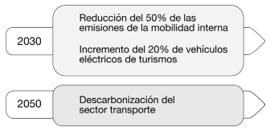
En relación con la mitigación de las emisiones provocadas por la movilidad, antes de finalizar este año 2022 todas las administraciónes y entitades privadas deben disponer de un plan de movilidad de su personal, con un plan de acción en coherencia con los objetivos de la Estrategia nacional de movilidad sostenible aprobada en el 2021. Debido al pequeño tamaño de Andorra, la totalidad de entidades está alrededor de 55, pero es un aspecto clave para ayudar en la reducción de las emisiones de la quema de combustible fósiles.
Previo a la aprobación de la Ley 21/2018, del 13 de septiembre, de impulso de la transición energética y del cambio climático, en el año 2018, ante la necesidad de un cambio de modelo energético, el Gobierno aprobó el Plan sectorial de infraestructuras energéticas de Andorra (Decreto del 16-05-2018), la herramienta urbanística para identificar y planificar la ejecución de las infraestructuras energéticas que deben permitir el desarrollo del nuevo modelo energético, siguiendo el criterio de reducir las emisiones de GEI y fomentar las energías renovables. El objetivo global de este Plan sectorial en materia energética, vigente actualmente, fue recogido posteriormente por la referida Ley. En la imagen siguiente se muestra el marco estratégico y normativo que refuerza la acción climática nacional:
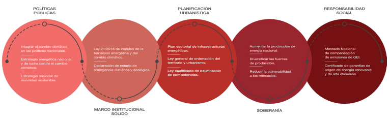
Si bien Andorra no está expuesta de forma directa al suministro de gas ruso, en el transcurso de este año 2022 las consecuencias de la crisis energética global pueden ser diversas y numerosas. En este contexto, es de primordial importancia que los gestores públicos, la ciudadanía y los responsables de las actividades económicas del país tomen conciencia de la necesidad de adoptar patrones de austeridad y ahorro energético.
Por esta razón, a través de este Decreto y de otros instrumentos (en la Administración comunal, sector empresarial y ciudadanía), y apelando al rol ejemplar de la Administración y a la responsabilidad colectiva, el Gobierno ha preparado un paquete de normas que persiguen este objetivo y que afectan a la Administración general, a las entidades parapúblicas o de derecho público y a las sociedades públicas con participación mayoritaria de la Administración general. Una de estas herramientas es el Decreto de medidas de ahorro energético de la Administración general, organismos autónomos, entidades parapúblicas o de derecho público y sociedades con participación mayoritaria de la Administración general.
Por otra parte, recientemente se ha aprobado también la Ley 31/2022, de 21 de julio, para el desarrollo y la diversificación de los sectores ganadero y agrícola, la cual prevé, como actuación protegible, la instalación de sistemas de aprovechamiento de energías procedentes de fuentes renovables en los edificios que forman parte de las instalaciones y de equipamientos que configuren las explotaciones agrarias que consten inscritas en el Registro
de Explotaciones Agrarias. Con ello, la modernización de los sectores agrícola y ramadero y su implicación en la producción de energía a partir de fuentes renovables, hacen de este sector económico un actor más a considerar en la acción climática nacional.
MECANISMOS EN INNOVACIÓN, TECNOLOGÍA, EDUCACIÓN Y FORTALECIMIENTO DE CAPACIDADES
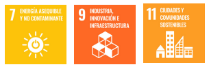
Las tecnologías evolucionan muy rápidamente y es urgente la adopción de las tecnologías lo más avanzadas posible de descarbonización y de adaptación a los fenómenos del cambio climático. La aplicación de estas requiere su posterior evaluación a través de los indicadores que se definan.
Por todo ello, la Estrategia energética nacional y del cambio climático incorpora un programa de innovación, investigación y observación sistemática, el cual incluye, tal y como establece la Ley 21/2018, del 13 de setiembre, de impulso de la transición energética y del cambio climático, la posibilidad de realizar pruebas piloto, así como fomentar la interacción entre los actores del sistema económico y el mundo científico (Artículo 8). Se trata de una pieza clave en la mejora de la gestión frente al cambio climático y otros sectores, como el sanitario, tal y como se ha demostrado en la pasada crisis sanitaria producida por el COVID-19.
Por ello, la Estrategia energética nacional y de lucha contra el cambio climático incluye:
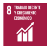
La capacitación hacia la neutralidad del carbono del sector profesional, un sector clave en la ejecución de las acciones en el marco de la transición energética (eficiencia energética, producción de energías renovables, etc.). El artículo 43 de la Ley 21/2018, del 13 de setiembre, de impulso de la transición energética y del cambio climático, prevé más concretamente que los profesionales que presten servicios en los ámbitos de la instalación, del montaje y de la obra en la edificación, requieran, en el contexto de la transición energética, una capacitación profesional específica, con el objetivo final de garantizar un alto grado de calidad en los servicios prestados y de asegurar la protección del consumidor. Esta ley encomienda al Gobierno la aprobación y la públicación de los requisitos de las formaciones y de las capacitaciones profesionales que resulten, así como la adaptación y la adopción de la normativa que proceda para hacer efectivas estas previsiones. Anualmente, se convocan dos convocatorias destinadas al sector de instaladores energéticos y ya es obligatorio disponer de esta capacitación para poder realizar este tipo de actuaciones en el país. A partir de 2023, se prevé realizar dos convocatorias anuales para alcanzar la formación de todo el personal que trabaje en la edificación antes del 2025.
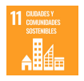
La sensibilización y divulgación hacia la neutralidad en carbono de la ciudadanía. En la actualidad ya se cuenta con una agencia de información y sensibilización en material ambiental (Andorra Sostenible) desde la que se refuerza la información relativa al cambio climático, con el objetivo de que la sociedad tenga la información suficiente y adecuada para poder decidir también individualmente sobre sus hábitos y estilos de vida, de cómo estos influyen sobre el conjunto de la sociedad hacia la neutralidad de carbono. Complementariamente, se ha abierto un canal de comunicación directo a través de las redes sociales desde la Oficina de la Energía y del Cambio Climático, más destinada a divulgar información de carácter profesional o normativa (@accioclima).
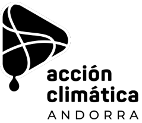

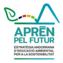
La transición educativa. La Ley 21/2018, del 13 de setiembre, de impulso de la transición energética y del cambio climático, encomienda al Gobierno, a través del Ministerio competente en materia de educación, que asegure la sensibilización y la educación de la población escolar del país en relación con el cambio climático y con la acción nacional prevista. Para ello, se realiza un análisis de la integración de esta temática en los diferentes grados o unidades didácticas de los sistemas educativos del país. Este año 2022 ha sido aprobada por el Gobierno de Andorra, para el Horizonte 2030, la Estrategia Andorrana de Educación Ambiental para la Sostenibilidad (Aprèn pel futur), elaborada de forma participativa con los sectores, agentes y jóvenes implicados. Esta estrategia se alinea con los objetivos internacionales, pirenaicos y nacionales, y planifica 9 acciones en 9 años. Entre ellas, pasar a la acción frente a la crisis climática.
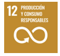
La información y protección del usuario. Tal y como la Ley anteriormente referida prevé, el empoderamiento de la ciudadanía como consumidora pasa por informar para que pueda tomar sus decisiones, como agente activo con opinión y criterio. Este empoderamiento de los usuarios permite que las políticas energéticas se apliquen de manera más eficaz gracias a las decisiones de la ciudadanía, por lo que será esta la que impulsará la transición energética. Para ello es necesario que la información sea clara, comprensible y transparente. Concretamente, se mejora la información y protección del usuario en lo que se refiere a:
La creación de registros públicos que permitan el acceso rápido a la información, como el registro energético nacional, la herramienta de seguimiento y control centralizado de los flujos energéticos del país que incluye información relativa a las cantidades de energía térmica y eléctrica producida, distribuida, consumida, almacenada, importada y exportada a escala nacional y la venta de la energía; o el distintivo ambiental de vehículos, para el que se ha generado una aplicación digital con la información relativa a cada vehículo puesto en el mercado y facilita la toma de decisiones para los usuarios.

Asegurar la calidad y fiabilidad del abastecimiento energético, así como identificar a los usuarios que puedan ser susceptibles de estar en una situación de precariedad energética y dotar de información a las empresas y entidades del sector energético de cómo actuar ante estos casos. Estas actuaciones van acompañadas de un protocolo de actuación por parte de la Administración pública en caso de ser necesario proteger al usuario.país que incluye información relativa a las cantidades de energía térmica y eléctrica producida, distribuida, consumida, almacenada, importada y exportada a escala nacional y la venta de la energía; o el distintivo ambiental de vehículos, para el que se ha generado una aplicación digital con la información relativa a cada vehículo puesto en el mercado y facilita la toma de decisiones para los usuarios.
Por otra parte, la información sobre la importancia social y económica de los servicios ecosistémicos y las necesidades de adaptación frente a los futuros escenarios climáticos, también permite un posicionamiento más aproximado a la realidad climática de la sociedad ante las políticas de gestión que se toman.
MECANISMOS EN PARTICIPACIÓN, COLABORACIÓN Y COOPERACIÓN
Para asegurar la participación de los actores claves en las políticas estratégicas en materia de energía y de cambio climático que nos conduzcan hacia la neutralidad de carbono, se pone en funcionamiento la Comisión Nacional de la Energía y del Cambio Climático a través del reglamento11, aprobado el 12 de febrero de 2020.
Esta comisión tiene un papel especialmente relevante en la evaluación y el seguimiento de la Estrategia energética nacional y de lucha contra el cambio climático. Cuenta con la participación de representantes de la Administración pública, del sector privado, del tercer sector, de colegios profesionales, del sector de la investigación, así como de la juventud a través de los representantes del Foro Nacional de la Juventud de Andorra.
Para dar más amplitud a la participación, la comisión aprueba la creación de las subcomisiones de trabajo necesarias, las cuales evalúan las propuestas y preocupaciones de los diversos agentes en las materias que se desarrollan o que están en funcionamiento, tales como la Subcomisión permanente de trabajo técnico en el marco de la movilidad.
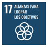
Asimismo, para solucionar problemas comunes y generar conocimiento, la cooperación es una herramienta clave y especialmente importante para países pequeños y vulnerables al cambio climático como Andorra.
Este es uno de los motivos por el que la cooperación transfronteriza con las regiones más próximas, como Francia y España, se sigue priorizando. Muestra de ello es el seguimiento y participación en proyectos de la Comunidad de Trabajo de los Pirineos (CTP), como el Observatorio Pirenaico de Cambio Climático (OPCC) o el de Emergencias Médicas (EM).
Otros mecanismos de colaboración y cooperación con regiones no transfronterizas se llevan a cabo desde hace años. A través de la capitalización y transferencia de información, esta cooperación permite avanzar y mejorar en las estrategias en el ámbito del cambio climático. En la primera Comunicación Nacional de Andorra en el marco del CMNUCC, se describe esta cooperación en mayor detalle. Como ejemplo, tenemos los protocolos bilaterales de acuerdo en materia de cambio climático con el Ministerio competente del Gobierno de España (2016) y el del Gobierno de Costa Rica (2016), así como en materia de observación sistemática climática con la agencia estatal meteorológica de Francia (Météo-France) desde el año 2012, y otros convenios multilaterales como el de colaboración con la Red Iberoamericana de Oficinas del Cambio Climático.
En cuanto a la cooperación internacional, cabe destacar que cada año el Ministerio de Asuntos Exteriores elabora un plan para la ayuda al desarrollo, el cual se basa en las prioridades estratégicas, sectoriales y geográficas de Andorra y en los 17 ODS establecidos por las Naciones Unidas. Las prioridades estratégicas de la cooperación del Gobierno se basan en los siguientes 3 ejes principales:
Educación
Grupos vulnerables
El medio ambiente y la lucha contra el cambio climático, con especial atención a los temas relacionados con el agua.
Durante el período 2013-2015, el 12% del presupuesto total del Ministerio de Asuntos Exteriores se asignó a proyectos o programas de cooperación centrados específicamente en el medio ambiente y la lucha contra el cambio climático. Para el período más reciente, 2016-2019, se dispondrá de los datos próximamente, pero el apoyo al Programa de las Naciones Unidas para el Medio Ambiente y a la Organización Internacional de la Francofonía (OIF) para proyectos ambientales se ha mantenido como en el período anterior.
Andorra también forma parte de varios grupos o alianzas internacionales, como el Grupo de Amigos de las Montañas, que creó con Kirguistán, que tienen como prioridad el cambio climático en el marco de organizaciones internacionales como las Naciones Unidas o la FAO. Asimismo, este año está participando activamente con diferentes eventos para la celebración del Año Internacional del Desarrollo Sostenible de las Montañas, declarado por la Asamblea General de Naciones Unidas en diciembre del 2021.
En el marco del plan para la ayuda al desarrollo sostenible, con respecto a la cooperación con las ONG andorranas, actualmente se subvencionan 2 proyectos cada año que priorizan aspectos ambientales, ya sean energéticos, de optimización de recurso hídrico, etc.
No se ha recibido apoyo internacional hasta la fecha para la implementación de acciones de mitigación o adaptación.
Andorra solicitó, y recibió en abril de 2013, el apoyo de un consultor externo designado por el Programa de las Naciones Unidas para el Medio Ambiente (PNUMA) para identificar las circunstancias específicas del país, los pasos a seguir (documentación, plazos, etc.) y posibles canales de financiación. En línea con esta asistencia técnica, el país presentó, a principios de 2014, un proyecto de financiación al Fondo para el Medio Ambiente Mundial, para la preparación del primer informe bienal (BUR1) y la primera comunicación nacional (NC1). Sin embargo, no recibió respuesta.
Complementariamente a los compromisos en el marco del CMNUCC, Andorra ha tomado diferentes compromisos multilaterales de cooperación en acción climática. Concretamente, forma parte de la Coalición por la Neutralidad de Carbono, elemento que permite alinearse con el compromiso nacional que anunció el Principado para alcanzar la neutralidad de carbono en 2050. Esta Coalición por la Neutralidad de Carbono reúne a un grupo de países pioneros, que han acordado desarrollar estrategias climáticas ambiciosas para alcanzar los objetivos a largo plazo del Acuerdo de París y pretende recoger los beneficios socioeconómicos de la transición hacia la neutralidad en carbono, construir economías resilientes y acelerar la acción climática global a la velocidad y escala necesarias.
Otra de las coaliciones es la Coalición por la fijación de un precio del carbono a nivel internacional (Carbon Pricing Leadership Coalition). Tal y como apunta la coalición, los beneficios de disponer de un precio del carbono son uno de los instrumentos políticos más fuertes disponibles para hacer frente al cambio climático. Tiene el potencial de descarbonizar la actividad económica mundial cambiando el comportamiento de los consumidores, empresas e inversores, a la vez que desencadena la innovación tecnológica y genera ingresos que pueden aprovecharse productivamente. En este sentido, Andorra ha impulsado la tasa sobre el carbono con el objetivo de reclamar un precio del carbono universal que permita financiar la transición energética y la acción climática, así como las acciones necesarias para el pleno cumplimiento de los objetivos del Acuerdo de París (ver apartado de mecanismos financieros sobre la tasa de carbono).
Otra de las coaliciones a las que se ha adherido Andorra es la del Global Methane Pledge, iniciativa lanzada por el gobierno de Estados Unidos, la Unión Europea y sus socios para reducir las emisiones globales de metano y apoyar el objetivo de limitar el calentamiento global a 1,50C. A esta coalición se han adherido más de 100 países, que representan el 70% de la economía mundial y casi la mitad de las emisiones antropogénicas de metano.
En último lugar, durante la COP26 de Glasgow, Andorra se adhirió a la Declaración sobre bosques y uso del suelo, impulsada por la presidencia inglesa. Se trata de un texto que alienta a los Estados, de forma colectiva, a reforzar los compromisos en materia de protección de los bosques, acelerar la reforestación, aumentar la financiación y la inversión, compartir acciones en favor de la producción y consumo sostenibles, e insta a apoyar las comunidades locales y propietarios de tierra, así como a avanzar desde el multilateralismo en la protección y restauración de los ecosistemas naturales, paso imprescindible para mitigar los efectos del cambio climático.
MECANISMOS FINANCIEROS
Con el fin de sacar adelante todas las acciones previstas para la descarbonización hacia la neutralidad del carbono, así como las acciones necesarias para asegurar una buena adaptación a los cambios previstos, se ha creado un Fondo Verde. Este fondo se incorpora en el proyecto de Ley de los presupuestos generales del Gobierno y se alimenta de los impuestos finalistas que se puedan determinar con este objetivo, también de las dotaciones presupuestarias complementarias que prevean las leyes de presupuestos generales del Estado, así como de las donaciones y las aportaciones que reciba y otros posibles ingresos. En este sentido, a medio plazo se regularán los impuestos sobre el carbono que permitan también alimentar el Fondo Verde.
El pasado año 2021 se modificó la Ley de impuestos especiales para incluir un nuevo precio relacionado con la venta de hidrocarburos. El texto legal sigue los criterios y objetivos marcados por la Ley de impulso de la transición energética y del cambio climático (Litecc) para la reducción de las emisiones de CO2. Con la aprobación de esta tasa se ha dado un nuevo impulso al Fondo Verde para la transición energética y la lucha contra el cambio climático, y que se destina a impulsar las previsiones, planes o acciones que determina la propia Litecc.
En el caso del consumo de hidrocarburos en las calefacciones, el Gobierno ha previsto una gradualidad de la tasa verde para que esto no suponga un mayor impacto para las familias. Así, pese a que se preveía que durante el 2022, y por un consumo medio, supondría un incremento de un céntimo por litro, lo que supone un incremento de tan solo 4 euros al año, se ha aplazado su imposición debido al contexto energético y económico actual hasta el año 2023.
Al ser una tasa finalista, esta ha servido para rebajar el precio del abono mensual para utilizar el transporte público en todo el país. La medida entró en vigor el 1 de septiembre de 2021, y, gracias a dicha tasa, a partir de este año 2022 se ha podido ofrecer gratuitamente el transporte público nacional, suponiendo un incremento de usuarios de más del 100%. También se han rebajado las tarifas del transporte escolar, así como otras tarifas de ahorro para los más jóvenes.
Con el objetivo de que la tasa verde repercuta de forma directa sobre la ciudadanía, también se ha incrementado la partida presupuestaria para el programa de ayudas para cambiar o mejorar el sistema de calefacción de gasoil por uno más sostenible y proveniente de energía renovable. Las ayudas han sido de hasta un 55% del presupuesto final de la renovación del sistema de calefacción.
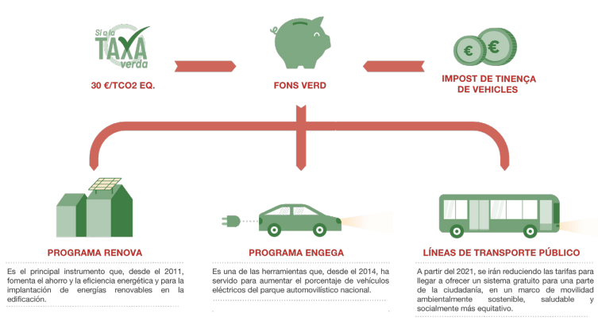
En último lugar, este Fondo Verde también alimenta un programa de ayudas destinado a la promoción del vehículo eléctrico en el país y se ha podido ampliar su alcance a vehículos de logística y transporte, no únicamente a turismos utilitarios, de acuerdo con la Estrategia de movilidad sostenible.
Por otra parte, desde setiembre 2021, Andorra cuenta con su propio mercado de compensación de emisiones, el cual tiene la voluntad de estimular proyectos sostenibles, respetuosos con el medio ambiente y a favor de la transición energética. La implementación de este sistema es una nueva herramienta para seguir dando pasos decididos hacia el objetivo de neutralidad carbono en 2050, implementando la hoja de ruta establecida en la Ley de impulso de transición energética y cambio climático (Litecc, artículo 50) y el tercer programa de la Estrategia energética nacional y de lucha contra el cambio climático 2020-2050.
Las compensaciones, de carácter voluntario, deben servir como herramienta que promueva y potencie la creación de proyectos innovadores en el campo de la lucha contra el cambio climático a escala local, y, al mismo tiempo, refuerce las políticas ambientales de mitigación para alcanzar los objetivos de reducción de emisiones fijadas por Andorra.
Aparte, el mercado tiene como finalidad favorecer la actividad económica y social del Principado apoyando a la sociedadm civil, las organizaciones, las entidades y las empresas que, en el marco de la responsabilidad social corporativa, por motivos éticos o de relaciones públicas, quieran adoptar políticas ambientales de reducción de emisiones y contribuir a la generación de proyectos de compensación dentro del territorio andorrano, avanzando así en el conocimiento y la capacidad institucional para hacer frente al cambio climático a largo plazo. En este sentido, se prevé que el precio de los créditos esté formado, además de la parte intrínseca al carbono, por una parte asociada a los cobeneficios del proyecto, definidos de acuerdo a los Objetivos de Desarrollo Sostenible (ODS), dotando así a los proyectos de un valor añadido además de la estricta compensación de emisiones.
Así pues, el mercado nacional de compensación de emisiones de GEI prevé impulsar mecanismos que permitan coordinar a los diferentes actores, facilitando la canalización voluntaria de fondos hacia proyectos que tengan como fundamento la mitigación del cambio climático, en un marco de absoluta transparencia e integridad ambiental, fomentando así la transición hacia una economía baja en carbono.
En último lugar, cabe destacar el mercado de garantías de origen de energía eléctrica, una herramienta prevista para fomentar el uso de las energías renovables para la generación de energía eléctrica, que se ha puesto en funcionamiento este año 2022.
Una garantía de origen de la energía eléctrica acredita que una cantidad determinada de energía eléctrica ha sido producida a nivel nacional o bien importada, y acredita su origen según se ha generado en:
Instalaciones de producción de electricidad a partir de fuentes de energía renovable.
Instalaciones de cogeneración de alta eficiencia.
Instalaciones que generan energía a partir de la fracción biodegradable de los residuos.
La transmisión y comercialización de las garantías de origen representan un nuevo mecanismo de financiación para los distintos actores del sector eléctrico. Además, en el marco de la información y protección de los usuarios, las garantías de origen se sitúan como mecanismo de información para facilitar la toma de decisiones y de fomento del consumo responsable en un contexto de transición energética.
A continuación, se detallan los objetivos y medidas de mitigación consideradas para los dos horizontes previstos en los principales sectores clave relacionados con la emisión de GEI.
7. Anexo
|
Sector |
Àrea |
Medio plazo (2030) |
Largo plazo (2050) |
|
Energía 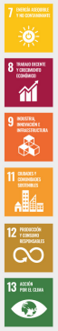 |
Movilidad |
Aumentar el porcentaje de vehículos a propulsión eléctrica del parque automovilístico nacional de turismos hasta el 20% y del 30% de la flota de la administración pública. Reducir el 84% de los desplazamientos con vehículo privado en el Valle Central y posicionar la movilidad a pie o vehículos de movilidad personal como los mayoritarios. Incrementar al maximo los usuarios del transporte público sin incrementar las emisiones de GEI a partir del 2030. Reducir a la mitad las emisiones Descarbonización del sector de la derivadas del transporte interno. |
Aumentar el porcentaje de vehículos a propulsión eléctrica del parque automovilístico nacional de turismos hasta el 50% y del 79% de la flota de la administración pública. Descarbonización del sector de la movilidad. |
|
Sector |
Àrea |
Medio plazo (2030) |
Largo plazo (2050) |
|
Energía |
Edificación |
Seguir fomentando de la rehabilitación de las viviendas para hacerlas más eficientes. |
|
|
Cualquier edificio de nueva construcción a partir del 1 de enero de 2020, debe ser de consumo de energía casi nulo. Incorporar un gestor energético antes de finalizar el año 2020. Realizar un plan de actuación en base a las auditorías energéticas realizadas antes del año 2022 en todos los edificios calefactados de la Administración. Perseguir una reducción del 15% del consumo energético de la Administración pública como rol ejemplar a partir de octubre del 2022. |
Colocación de energías renovables en todos los edificios de la Administración, reduciendo asi el consumo de electricidad y calefacción en los establecimientos públicos. |
||
|
Sector |
Àrea |
Medio plazo (2030) |
Largo plazo (2050) |
|
Energía |
Electricidad |
Aumentar la producción eléctrica nacional hasta el 33% de la demanda eléctrica. Producción eléctrica nacional con más del 75% proveniente de fuentes renovables. Infraestructuras necesarias para el transporte de la energía e incrementar la capacitad de importacion de energía eléctrica según las directrices del Plan director de infraestructuras eléctricas de FEDA 2016-2026. Que las emisiones de GEI se reduzcan como mínimo un 32% en cuanto a la energía eléctrica y un 7% en cuanto a la energía térmica. Mejorar la eficiencia energética del alumbrado público a traves de un reglamento. Limitación horaria de acuerdo con el decreto de medidas de ahorro energético y el reglamento de contaminación lumínica vigente. Reducir la intensidad energética un un mínimo del 20%. |
Aumentar la producción eléctrica nacional hasta el 50% de la demanda eléctrica. Que la producción eléctrica nacional provenga en un 80% de energías renovables, fomentando asi la energía hidraulica, la solar, la eólica, la geotermia y la biomasa. Reducir la intensidad energética un un mínimo del 30%. |
|
Sector |
Medio plazo (2030) |
Largo plazo (2050) |
|
|
Agricultura y usos del suelo 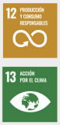 |
Fomentar la diversificación de la producción agrícola y el consumo de los productos de proximidad. Mantener como mínimo la capacidad de sumidero del territorio respecto al año 2017 (-139 Gg CO2eq/año). |
Mantener com mínimo la capacidad de sumidero del territorio respecto al año 2017 (-139 Gg Co2eq/año) y fomentar el incremento de esta mediante proyectos del mercado voluntario de carbono y la aplicación de acciones de silvicultura adaptativa, priorizando las medidas basadas en la naturaleza. La demanda térmica de las administraciónes locales deberá ser cubierta prioritariamente por biomasa, lo cual desarrolla proyectos de silvicultura adaptative que mejoren el rendimiento de capacidad de sumidero de los bosques. |
|
Sector |
Medio plazo (2030) |
Largo plazo (2050) |
|
Residuos 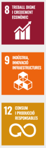 |
Disponer de la Ley de Economía circular que fije objectivos cuantificables y permita el desarrollo del Plan de Economía Circular que incluya la mejora de la huella de carbono de las actuaciones previstas. |
Implementación avanzada y revisada del Plan de Economía Circular. |